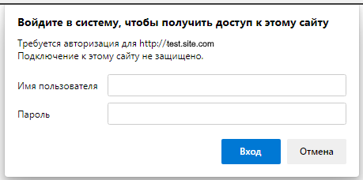

Базовая авторизация
Бывают такие случаи когда страница закрыта базовой авторизацией

Для работы с базовой авторизацией есть два метода:
Пример использования метода BrowserBasicAuthenticationAsync
|
Файл: ExampleTest6.cs |
|
using System; using System.Collections.Generic; using System.ComponentModel; using System.Windows.Forms; using System.Threading; using System.Threading.Tasks; using System.IO; using System.Data; using System.Drawing; using System.Linq; using System.Text; using System.Text.RegularExpressions; using System.Net; using System.Net.Http; using System.Net.Http.Headers; using System.Reflection; using Newtonsoft.Json; using HatFramework; namespace Hat { public class ExampleTest5 { Tester tester; // Главная переменная для работы автотеста // Главная входная функция (с этой функции начинается работа автотеста) public async void Main(Form browserWindow) { tester = new Tester(browserWindow); // Инициализация главной переменной await setUp(); // Функция начала работы с автотестом await test(); // Функция выполнения действий теста await tearDown(); // Функция завершения работы с автотестом } public async Task setUp() { await tester.BrowserFullScreenAsync(); // Устанавливает разрешение браузер на весь экран await tester.BrowserBasicAuthenticationAsync("login", "pass"); // Выполнение базовой авторизации } public async Task test() { await tester.TestBeginAsync(); // Начало выполнения действий await tester.GoToUrlAsync("https://test.site.com", 5); // Загрузка страницы по указанному адресу await tester.TestEndAsync(); // Завершение выполнения действий } public async Task tearDown() { await tester.BrowserCloseAsync(); // Закрывает браузер } } } |
Пример использования метода GoToUrlBaseAuthAsync
|
Файл: ExampleTest6.cs |
|
using System; using System.Collections.Generic; using System.ComponentModel; using System.Windows.Forms; using System.Threading; using System.Threading.Tasks; using System.IO; using System.Data; using System.Drawing; using System.Linq; using System.Text; using System.Text.RegularExpressions; using System.Net; using System.Net.Http; using System.Net.Http.Headers; using System.Reflection; using Newtonsoft.Json; using HatFramework; namespace Hat { public class ExampleTest5 { Tester tester; // Главная переменная для работы автотеста // Главная входная функция (с этой функции начинается работа автотеста) public async void Main(Form browserWindow) { tester = new Tester(browserWindow); // Инициализация главной переменной await setUp(); // Функция начала работы с автотестом await test(); // Функция выполнения действий теста await tearDown(); // Функция завершения работы с автотестом } public async Task setUp() { await tester.BrowserFullScreenAsync(); // Устанавливает разрешение браузер на весь экран } public async Task test() { await tester.TestBeginAsync(); // Начало выполнения действий // Выполнение базовой авторизации при загрузке страницы await tester.GoToUrlBaseAuthAsync("https://test.site.com", "login", "pass", 5); await tester.TestEndAsync(); // Завершение выполнения действий } public async Task tearDown() { await tester.BrowserCloseAsync(); // Закрывает браузер } } } |
Created with the Personal Edition of HelpNDoc: Write EPub books for the iPad